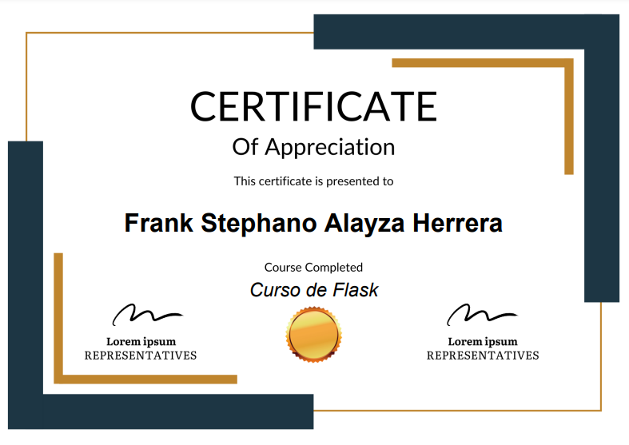
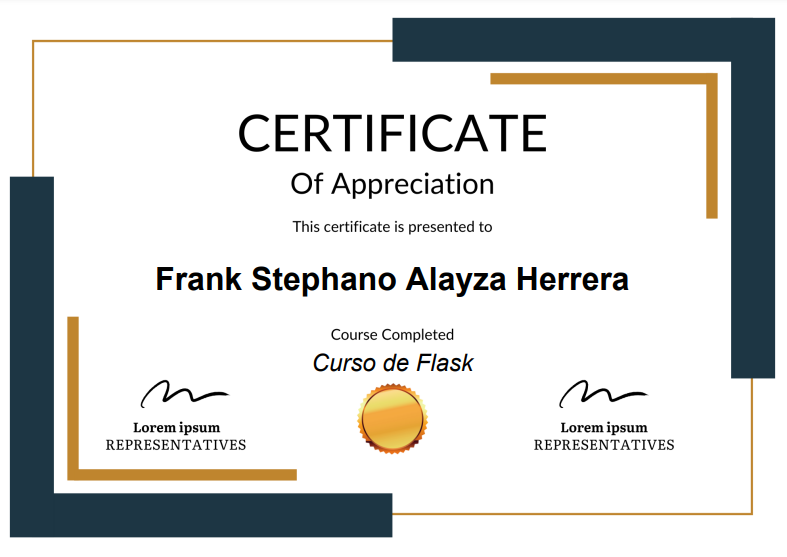

Generador de certificados
 

Descripción
A través de la automatización de procesos, se generan certificados de participación en eventos, cursos, talleres, etc. de manera rápida y sencilla.
Tecnologías utilizadas
- Python
- Flask
- FPDF
- HTML
- CSS
Funcionalidades
- Generar certificados instantáneamente
Problemas resueltos
- Proceso manual de la copia del certificado para cada estudiante.